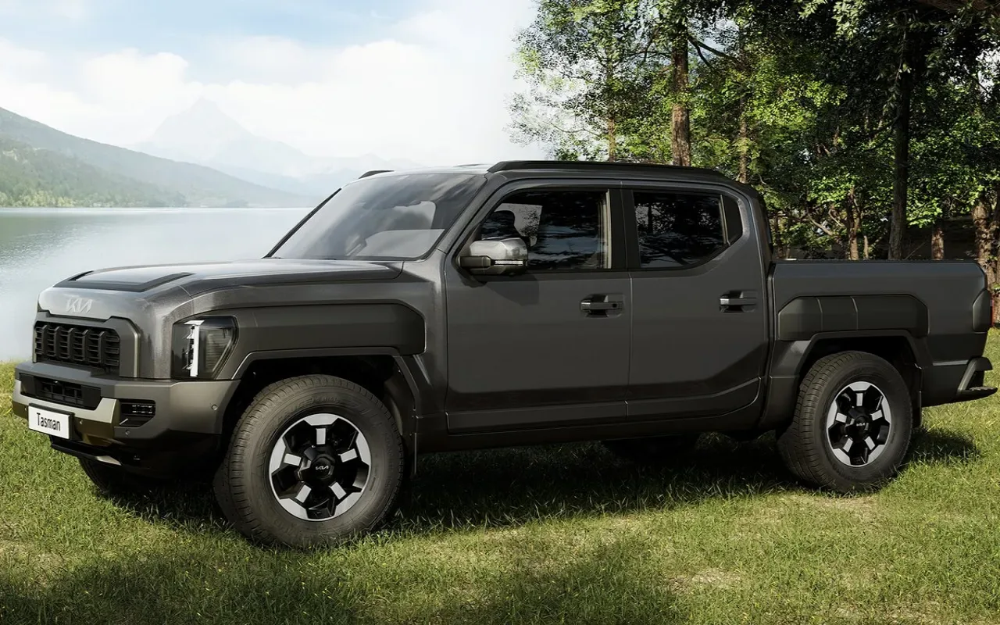

▲ 기아 타스만. 국내 픽업 시장의 기대주였으나 월 판매 250대 안팎에 머물고 있다
이달 초 기아의 출고 대기표를 정리하면서 눈에 띈 숫자가 있었습니다. 타스만의 출고 대기가 1개월로, 기아 전체에서 가장 짧았습니다. 레이가 10개월이었으니 아홉 배 차이였습니다.
그때는 그것을 장점으로 읽었습니다. 지금 계약하면 한 달 안에 받는다는 뜻이니까요. 그런데 판매 실적을 보면 해석이 달라집니다. 대기가 짧은 이유가 계약이 적어서였습니다.
1. 대기 1개월이 좋은 신호가 아닐 때
출고 대기 기간은 흔히 인기의 지표로 쓰입니다. 계약이 몰릴수록 생산이 따라가지 못해 대기가 길어지기 때문입니다.
그래서 대기가 짧으면 두 가지 중 하나입니다. 생산 능력이 넉넉하거나, 계약이 적거나. 타스만은 후자에 가깝습니다.

▲ 대기 기간만 보면 가장 빨리 받을 수 있는 기아 차종이다 ⓒ 기아
월 250대는 단일 차종 실적으로 작은 숫자입니다. 국내 픽업 시장 자체가 크지 않다는 점을 감안해도, 출시 당시의 기대치와는 거리가 있습니다.
📍 출고 대기표를 읽는 법
대기 기간은 계약 대수 ÷ 생산 배정으로 결정됩니다. 그래서 같은 "1개월"이라도 의미가 정반대일 수 있습니다.
· 생산을 넉넉히 배정받은 인기 차종 → 좋은 신호
· 계약이 적어 대기가 쌓이지 않은 차종 → 나쁜 신호
둘을 구분하려면 대기 기간과 월 판매량을 함께 봐야 합니다.
2. 250만원을 깎았는데
기아의 대응은 가격이었습니다. 7월 1일부터 가격을 250만원 낮춘 3,399만원 트림의 계약을 시작했습니다. 옵션 구성을 유지하면서 값을 내린 실속형 구성입니다.
▲ 가격을 낮춘 트림이 나왔지만 판매 반전은 아직 확인되지 않았다 ⓒ 기아
그럼에도 8월까지 뚜렷한 반전은 확인되지 않았습니다. 가격이 유일한 문제였다면 250만원 인하는 상당한 폭입니다. 반응이 크지 않았다는 것은 다른 요인이 함께 작용하고 있다는 뜻입니다.
3. 무엇이 걸렸나
가장 많이 지목되는 것은 디자인입니다. 헤드램프와 휀더 플레어가 이어지는 전면부 구성이 호불호를 강하게 갈랐습니다. 픽업은 개성이 강한 장르이지만, 그 개성이 구매층 다수와 어긋나면 판매로 이어지지 않습니다.

▲ 전면 디자인이 호불호를 가장 크게 가른 요소로 지목된다 ⓒ 기아
두 번째는 대체재입니다. 국내에서 픽업을 사는 수요는 크게 두 갈래입니다. 적재와 작업이 목적인 실용 수요, 그리고 레저용 수요입니다.
레저 수요는 SUV와 겹칩니다. 아이를 태우고 마트와 학원을 오가는 사용 패턴이라면, 넓은 적재함보다 쏘렌토 하이브리드의 정숙성과 연비가 더 설득력 있게 다가옵니다. 같은 기아 안에서 수요가 갈리는 구조입니다.
세 번째는 유지비입니다. 픽업은 차체가 크고 무거워 연비가 불리하고, 도심 주차에서도 제약이 생깁니다. 구매가만 낮춘다고 해결되는 항목이 아닙니다.
| 요인 | 내용 |
|---|---|
| 디자인 | 전면부 구성에 대한 호불호가 강함 |
| 대체재 | 레저 수요가 SUV·하이브리드로 이동 |
| 유지비 | 연비·주차 등 보유 비용 부담 |
| 시장 규모 | 국내 픽업 수요층 자체가 제한적 |
4. 살 사람에게는 오히려 기회다
이 상황은 구매를 고려하는 사람에게는 나쁘지 않습니다. 이유는 세 가지입니다.
첫째, 기다리지 않습니다. 대기 1개월은 국내 신차 시장에서 매우 짧은 편입니다. 인기 차종이 6개월에서 1년을 기다리는 것과 비교하면 차이가 큽니다.
둘째, 조건이 좋아집니다. 판매가 부진하면 제조사와 영업 현장 모두 조건을 열어 둡니다. 이미 250만원 인하된 트림이 나와 있고, 재고 상황에 따라 추가 조건이 붙을 여지가 있습니다.
셋째, 경쟁이 없습니다. 국내에서 선택할 수 있는 픽업은 손에 꼽습니다. 픽업이라는 형태 자체가 필요한 사람에게 대안은 애초에 많지 않습니다.
반대로 감안할 것은 잔존가치입니다. 판매가 적으면 중고 시장의 거래 표본도 적어져 시세가 형성되기 어렵습니다. 3~5년 뒤 처분을 전제한다면 이 부분을 계산에 넣어야 합니다.
정리하면 이렇습니다. 타스만의 "대기 1개월"은 좋은 소식이면서 나쁜 소식입니다. 지금 사는 사람에게는 빠른 출고와 좋은 조건이고, 브랜드에게는 풀어야 할 숙제입니다. 출고 대기표를 볼 때 판매량을 나란히 놓고 봐야 하는 이유가 여기 있습니다.